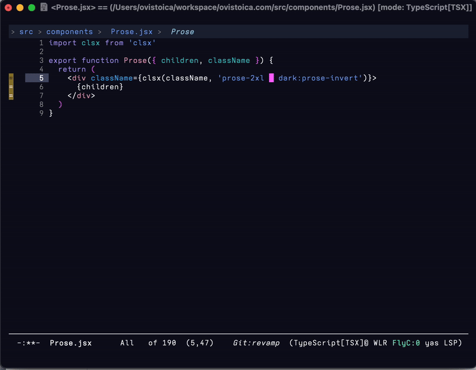
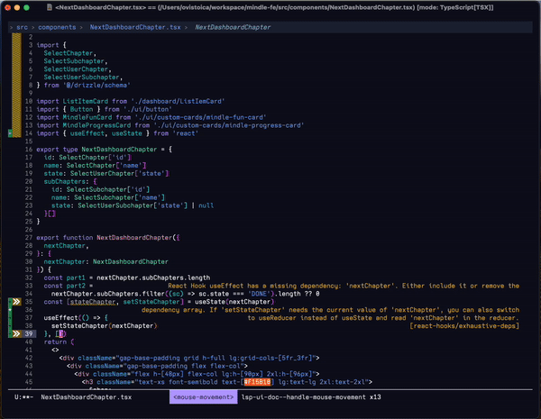
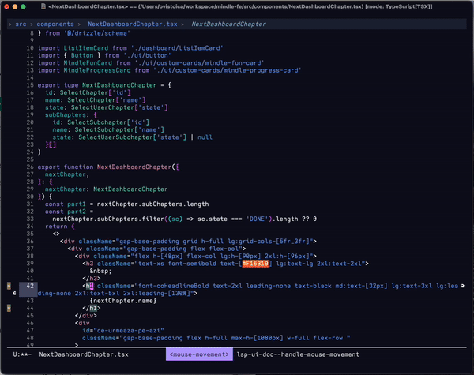

Modern Emacs Typescript Web (React) Config with lsp-mode, treesitter, tailwind, TSX & more
Table of Contents
- Introduction
- Part 1: Treesitter for Typescript & TSX
- LSP Support
- LSP Performance
- Structural editing
- Formatting buffers with Prettier
- Other resources
- Conclusion
Introduction
I've worked within the JS ecosystem for the past 8 years using editors like Webstorm and VSCode, I started using Emacs around 6 months ago and I quickly found that some of the pre-made configurations like Doom, don't come setup to fully support modern web development like the other ones, so I started a journey to make my own configuration that would satisfy all the needs of modern web dev.
Here are some requirements:
- Multiple LSP server support (
typescript,eslint,tailwind- optional) that work well together - JSX/TSX support with full features in an efficient way (treesitter)
- JSX structural editing (combobulate)
- Prettier auto-formatting (apheleia)
We will setup all of these parts so the end result looks like this:
Part 1: Treesitter for Typescript & TSX
People in the Emacs community have been combining libraries like Web Mode and Tide to achieve good TSX support but this setup doesn't pair nice with LSP servers.
You can setup eslint through flycheck or flymake but this removes the possibility to execute code actions:
Nowadays we can add full TSX support with Treesitter for the best performance in parsing the file and support for structural editing directly on the syntax tree (think delete-entire-jsx-node, wrap-jsx-node etc.)
(use-package treesit
:mode (("\\.tsx\\'" . tsx-ts-mode)
("\\.js\\'" . typescript-ts-mode)
("\\.mjs\\'" . typescript-ts-mode)
("\\.mts\\'" . typescript-ts-mode)
("\\.cjs\\'" . typescript-ts-mode)
("\\.ts\\'" . typescript-ts-mode)
("\\.jsx\\'" . tsx-ts-mode)
("\\.json\\'" . json-ts-mode)
("\\.Dockerfile\\'" . dockerfile-ts-mode)
("\\.prisma\\'" . prisma-ts-mode)
;; More modes defined here...
)
:preface
(defun os/setup-install-grammars ()
"Install Tree-sitter grammars if they are absent."
(interactive)
(dolist (grammar
'((css . ("https://github.com/tree-sitter/tree-sitter-css" "v0.20.0"))
(bash "https://github.com/tree-sitter/tree-sitter-bash")
(html . ("https://github.com/tree-sitter/tree-sitter-html" "v0.20.1"))
(javascript . ("https://github.com/tree-sitter/tree-sitter-javascript" "v0.21.2" "src"))
(json . ("https://github.com/tree-sitter/tree-sitter-json" "v0.20.2"))
(python . ("https://github.com/tree-sitter/tree-sitter-python" "v0.20.4"))
(go "https://github.com/tree-sitter/tree-sitter-go" "v0.20.0")
(markdown "https://github.com/ikatyang/tree-sitter-markdown")
(make "https://github.com/alemuller/tree-sitter-make")
(elisp "https://github.com/Wilfred/tree-sitter-elisp")
(cmake "https://github.com/uyha/tree-sitter-cmake")
(c "https://github.com/tree-sitter/tree-sitter-c")
(cpp "https://github.com/tree-sitter/tree-sitter-cpp")
(toml "https://github.com/tree-sitter/tree-sitter-toml")
(tsx . ("https://github.com/tree-sitter/tree-sitter-typescript" "v0.20.3" "tsx/src"))
(typescript . ("https://github.com/tree-sitter/tree-sitter-typescript" "v0.20.3" "typescript/src"))
(yaml . ("https://github.com/ikatyang/tree-sitter-yaml" "v0.5.0"))
(prisma "https://github.com/victorhqc/tree-sitter-prisma")))
(add-to-list 'treesit-language-source-alist grammar)
;; Only install `grammar' if we don't already have it
;; installed. However, if you want to *update* a grammar then
;; this obviously prevents that from happening.
(unless (treesit-language-available-p (car grammar))
(treesit-install-language-grammar (car grammar)))))
;; Optional, but recommended. Tree-sitter enabled major modes are
;; distinct from their ordinary counterparts.
;;
;; You can remap major modes with `major-mode-remap-alist'. Note
;; that this does *not* extend to hooks! Make sure you migrate them
;; also
(dolist (mapping
'((python-mode . python-ts-mode)
(css-mode . css-ts-mode)
(typescript-mode . typescript-ts-mode)
(js-mode . typescript-ts-mode)
(js2-mode . typescript-ts-mode)
(c-mode . c-ts-mode)
(c++-mode . c++-ts-mode)
(c-or-c++-mode . c-or-c++-ts-mode)
(bash-mode . bash-ts-mode)
(css-mode . css-ts-mode)
(json-mode . json-ts-mode)
(js-json-mode . json-ts-mode)
(sh-mode . bash-ts-mode)
(sh-base-mode . bash-ts-mode)))
(add-to-list 'major-mode-remap-alist mapping))
:config
(os/setup-install-grammars))
Full credit for this clean treesitter setup goes to Mickey Petersen in the
Combobulate Treesitter section
LSP Support
We'll need LSP support for features like completion,go-to-definition,
renaming variable in the entire project and so on. Web development is particularly different then other environments because you need more than one LSP provider.
If you look at VSCode, in a project with Tailwind support, there are 3 LSP servers active at the same time, providing actions for users.
If you want a comprehensive comparison between the current LSP options for emacs, here is the best comparison I found.
I've tried eglot, lsp-bridge & lsp-mode:
-
eglot is a nice since it's the emacs default but it doesn't support multiple servers in the same buffer which makes it a non-candidate.
-
lsp-bridge is the fastest provider but all tools used are custom made (custom completion, custom reference explorer) which makes it hard to integrate into your normal workflow. Setting it up is also harder than the rest
-
lsp-mode satisfies all the criteria and all the bells & whistles that it comes with can be muted so this is the provider I chose. We will delve in the performance tweaks after the initial setup.
Completion setup
First we need to setup a completion provider. For this I use Corfu:
;;;; Code Completion
;;;; Code Completion
(use-package corfu
:ensure t
;; Optional customizations
:custom
(corfu-cycle t) ; Allows cycling through candidates
(corfu-auto t) ; Enable auto completion
(corfu-auto-prefix 2) ; Minimum length of prefix for completion
(corfu-auto-delay 0) ; No delay for completion
(corfu-popupinfo-delay '(0.5 . 0.2)) ; Automatically update info popup after that numver of seconds
(corfu-preview-current 'insert) ; insert previewed candidate
(corfu-preselect 'prompt)
(corfu-on-exact-match nil) ; Don't auto expand tempel snippets
;; Optionally use TAB for cycling, default is `corfu-complete'.
:bind (:map corfu-map
("M-SPC" . corfu-insert-separator)
("TAB" . corfu-next)
([tab] . corfu-next)
("S-TAB" . corfu-previous)
([backtab] . corfu-previous)
("S-<return>" . corfu-insert)
("RET" . corfu-insert))
:init
(global-corfu-mode)
(corfu-history-mode)
(corfu-popupinfo-mode) ; Popup completion info
:config
(add-hook 'eshell-mode-hook
(lambda () (setq-local corfu-quit-at-boundary t
corfu-quit-no-match t
corfu-auto nil)
(corfu-mode))
nil
t))
Linter setup
Optionally you can setup a linter through which lsp-mode will give you diagnostics for your project & buffer.
(use-package flycheck
:ensure t
:init (global-flycheck-mode)
:bind (:map flycheck-mode-map
("M-n" . flycheck-next-error) ; optional but recommended error navigation
("M-p" . flycheck-previous-error)))
LSP Setup
(use-package lsp-mode
:diminish "LSP"
:ensure t
:hook ((lsp-mode . lsp-diagnostics-mode)
(lsp-mode . lsp-enable-which-key-integration)
((tsx-ts-mode
typescript-ts-mode
js-ts-mode) . lsp-deferred))
:custom
(lsp-keymap-prefix "C-c l") ; Prefix for LSP actions
(lsp-completion-provider :none) ; Using Corfu as the provider
(lsp-diagnostics-provider :flycheck)
(lsp-session-file (locate-user-emacs-file ".lsp-session"))
(lsp-log-io nil) ; IMPORTANT! Use only for debugging! Drastically affects performance
(lsp-keep-workspace-alive nil) ; Close LSP server if all project buffers are closed
(lsp-idle-delay 0.5) ; Debounce timer for `after-change-function'
;; core
(lsp-enable-xref t) ; Use xref to find references
(lsp-auto-configure t) ; Used to decide between current active servers
(lsp-eldoc-enable-hover t) ; Display signature information in the echo area
(lsp-enable-dap-auto-configure t) ; Debug support
(lsp-enable-file-watchers nil)
(lsp-enable-folding nil) ; I disable folding since I use origami
(lsp-enable-imenu t)
(lsp-enable-indentation nil) ; I use prettier
(lsp-enable-links nil) ; No need since we have `browse-url'
(lsp-enable-on-type-formatting nil) ; Prettier handles this
(lsp-enable-suggest-server-download t) ; Useful prompt to download LSP providers
(lsp-enable-symbol-highlighting t) ; Shows usages of symbol at point in the current buffer
(lsp-enable-text-document-color nil) ; This is Treesitter's job
(lsp-ui-sideline-show-hover nil) ; Sideline used only for diagnostics
(lsp-ui-sideline-diagnostic-max-lines 20) ; 20 lines since typescript errors can be quite big
;; completion
(lsp-completion-enable t)
(lsp-completion-enable-additional-text-edit t) ; Ex: auto-insert an import for a completion candidate
(lsp-enable-snippet t) ; Important to provide full JSX completion
(lsp-completion-show-kind t) ; Optional
;; headerline
(lsp-headerline-breadcrumb-enable t) ; Optional, I like the breadcrumbs
(lsp-headerline-breadcrumb-enable-diagnostics nil) ; Don't make them red, too noisy
(lsp-headerline-breadcrumb-enable-symbol-numbers nil)
(lsp-headerline-breadcrumb-icons-enable nil)
;; modeline
(lsp-modeline-code-actions-enable nil) ; Modeline should be relatively clean
(lsp-modeline-diagnostics-enable nil) ; Already supported through `flycheck'
(lsp-modeline-workspace-status-enable nil) ; Modeline displays "LSP" when lsp-mode is enabled
(lsp-signature-doc-lines 1) ; Don't raise the echo area. It's distracting
(lsp-ui-doc-use-childframe t) ; Show docs for symbol at point
(lsp-eldoc-render-all nil) ; This would be very useful if it would respect `lsp-signature-doc-lines', currently it's distracting
;; lens
(lsp-lens-enable nil) ; Optional, I don't need it
;; semantic
(lsp-semantic-tokens-enable nil) ; Related to highlighting, and we defer to treesitter
:init
(setq lsp-use-plists t))
(use-package lsp-completion
:no-require
:hook ((lsp-mode . lsp-completion-mode)))
(use-package lsp-ui
:ensure t
:commands
(lsp-ui-doc-show
lsp-ui-doc-glance)
:bind (:map lsp-mode-map
("C-c C-d" . 'lsp-ui-doc-glance))
:after (lsp-mode evil)
:config (setq lsp-ui-doc-enable t
evil-lookup-func #'lsp-ui-doc-glance ; Makes K in evil-mode toggle the doc for symbol at point
lsp-ui-doc-show-with-cursor nil ; Don't show doc when cursor is over symbol - too distracting
lsp-ui-doc-include-signature t ; Show signature
lsp-ui-doc-position 'at-point))
It's quite big but most of it disables things I don't need. I took 90% of this config from Andrey Listopadov's Migrating from LSP-Mode to Eglot article where ironically in the end he moves back to lsp-mode.
Now we have a minimal LSP configuration. If you visit a .ts or
.tsx file, you will be prompted to enable LSP and most likely
download a server. Select ts-ls
Eslint
Let's setup eslint to start in projects that support it
(use-package lsp-eslint
:demand t
:after lsp-mode)
Additionally, follow the steps from LSP-Mode's React Javascript tutorial for adding linting in order to download the server.
(Optional) Tailwind LSP Server
We'll use lsp-tailwindcss however it's not on Melpa so I'll use
straight to download it. You can also download the lsp-tailwindcss.el
file and load it in your init.el. Here's my config
(use-package lsp-tailwindcss
:straight '(lsp-tailwindcss :type git :host github :repo "merrickluo/lsp-tailwindcss")
:init (setq lsp-tailwindcss-add-on-mode t)
:config
(dolist (tw-major-mode
'(css-mode
css-ts-mode
typescript-mode
typescript-ts-mode
tsx-ts-mode
js2-mode
js-ts-mode
clojure-mode))
(add-to-list 'lsp-tailwindcss-major-modes tw-major-mode)))
Install the server:
M-x lsp-install-server, then select tailwindcss.
LSP Performance
Everything is working correctly now, and you should have already good support for web development BUT performance can be better.
Run M-x lsp-doctor. If you see
Checking for Native JSON support: OK
Check emacs supports `read-process-output-max': OK
Check `read-process-output-max' default has been changed from 4k: OK
Byte compiled against Native JSON (recompile lsp-mode if failing when Native JSON available): OK
`gc-cons-threshold' increased?: OK
Using `plist' for deserialized objects? (refer to https://emacs-lsp.github.io/lsp-mode/page/performance/#use-plists-for-deserialization): OK
Using emacs 28+ with native compilation?: OK
You are in a very good place. If not, please have a look at The official lsp-mode performance guide
Here's my setting for performance
(setenv "LSP_USE_PLISTS" "true") ;; in early-init.el
;; init.el
;;;; per https://github.com/emacs-lsp/lsp-mode#performance
(setq read-process-output-max (* 10 1024 1024)) ;; 10mb
(setq gc-cons-threshold 200000000)
Emacs LSP Booster
My experience has been that even with all of these improvements, you'll still get consistent freezes in your UI given the single threaded sync nature of Emacs.
I'll admit I was close to starting exploring Nvim until I found Emacs LSP Booster.
The most expensive operation for an LSP provider is parsing JSON since that is the agreed-upon protocol. While newer versions of Emacs ship with native JSON support, it's still not performant enough especially for servers like Tailwind which I found give emacs a lot of JSON to parse.
LSP Booster is an external executable that wraps LSP server providers and asynchronously converts JSON to plists so lsp-mode can use them directly.
To install, follow the instructions from the github repository. After
that add these lines in your lsp-mode config:
(use-package lsp-mode
;; ... previous configuration
:preface
(defun lsp-booster--advice-json-parse (old-fn &rest args)
"Try to parse bytecode instead of json."
(or
(when (equal (following-char) ?#)
(let ((bytecode (read (current-buffer))))
(when (byte-code-function-p bytecode)
(funcall bytecode))))
(apply old-fn args)))
(defun lsp-booster--advice-final-command (old-fn cmd &optional test?)
"Prepend emacs-lsp-booster command to lsp CMD."
(let ((orig-result (funcall old-fn cmd test?)))
(if (and (not test?) ;; for check lsp-server-present?
(not (file-remote-p default-directory)) ;; see lsp-resolve-final-command, it would add extra shell wrapper
lsp-use-plists
(not (functionp 'json-rpc-connection)) ;; native json-rpc
(executable-find "emacs-lsp-booster"))
(progn
(message "Using emacs-lsp-booster for %s!" orig-result)
(cons "emacs-lsp-booster" orig-result))
orig-result)))
:init
(setq lsp-use-plists t)
;; Initiate https://github.com/blahgeek/emacs-lsp-booster for performance
(advice-add (if (progn (require 'json)
(fboundp 'json-parse-buffer))
'json-parse-buffer
'json-read)
:around
#'lsp-booster--advice-json-parse)
(advice-add 'lsp-resolve-final-command :around #'lsp-booster--advice-final-command))
Now your LSP completions will be blazingly fast 🔥 and there will be no UI freezes!
Structural editing
I use Combobulate for structural editing. It adds support for structural navigation and edition like you would get in lisp-like languages.
Here's the config, from the repo itself:
(use-package treesit
;; ... all the config from above
:config
(os/setup-install-grammars)
;; Do not forget to customize Combobulate to your liking:
;;
;; M-x customize-group RET combobulate RET
;;
(use-package combobulate
:preface
;; You can customize Combobulate's key prefix here.
;; Note that you may have to restart Emacs for this to take effect!
(setq combobulate-key-prefix "C-c o")
;; Optional, but recommended.
;;
;; You can manually enable Combobulate with `M-x
;; combobulate-mode'.
:hook
((python-ts-mode . combobulate-mode)
(js-ts-mode . combobulate-mode)
(go-mode . go-ts-mode)
(html-ts-mode . combobulate-mode)
(css-ts-mode . combobulate-mode)
(yaml-ts-mode . combobulate-mode)
(typescript-ts-mode . combobulate-mode)
(json-ts-mode . combobulate-mode)
(tsx-ts-mode . combobulate-mode))
;; Amend this to the directory where you keep Combobulate's source
;; code.
:load-path ("~/workspace/combobulate")))
Here's the result:
Formatting buffers with prettier
I use apheleia for formatting buffers on save. It works great and almost out of the box.
;;; APHELEIA
;; auto-format different source code files extremely intelligently
;; https://github.com/radian-software/apheleia
(use-package apheleia
:ensure apheleia
:diminish ""
:defines
apheleia-formatters
apheleia-mode-alist
:functions
apheleia-global-mode
:config
(setf (alist-get 'prettier-json apheleia-formatters)
'("prettier" "--stdin-filepath" filepath))
(apheleia-global-mode +1))
And now, apheleia will take your .prettierrc from the repository root and use that to format your files whenever you save.
Other resources
Here are some other resources that I explored which might be handy:
- tsx-mode.el - Special TSX mode that handles auto-closing tags, css-in-js, line code coverage and code folding
- tide - Typescript interactive development. Works well out of the box and is the default choice in Doom Emacs. I found it is limited in a monorepo setup.
Conclusion
I am very happy with the current setup I landed on and it took me a while to make it resemble the experience from VSCode & Webstorm.
I worked with this configuration within a big monorepo at my previous job and it performs as you expected.
Hope this is useful for you! If you think others might benefit, give it a share!